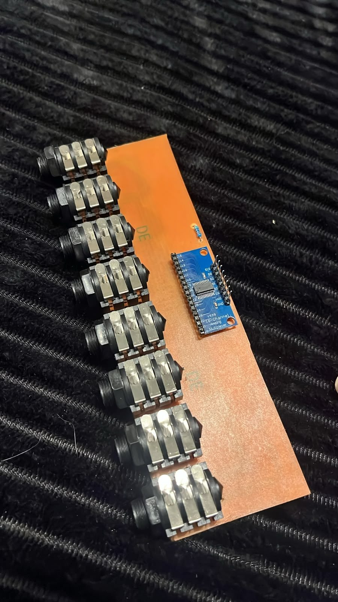
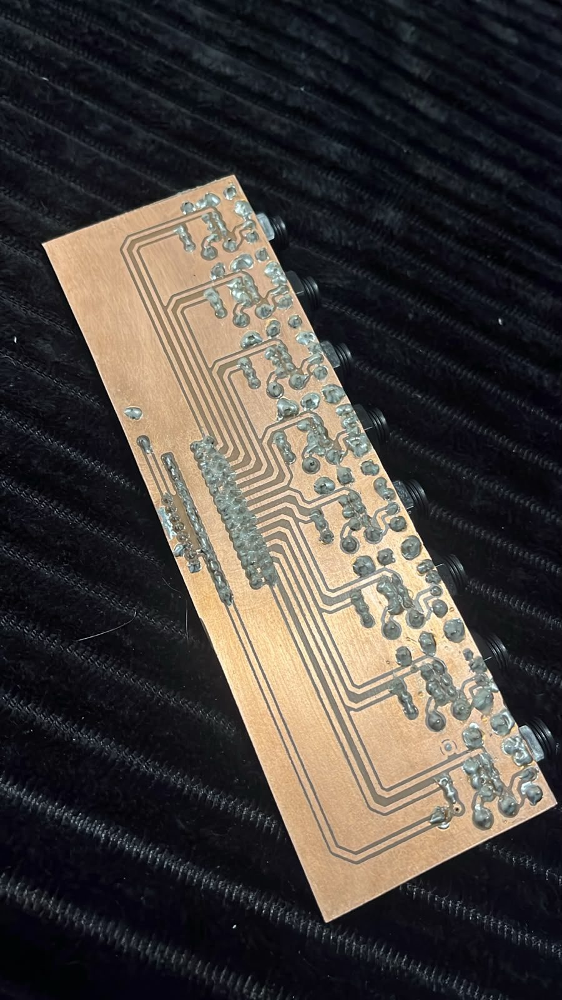
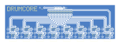
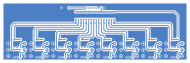

Hardware
Um ESP32-S3 no centro, 2x multiplexador CD4067 (32 canais de pad), tela TFT ST7735 via SPI, e 1 encoder rotativo com chave pra navegação. Cada subsistema sai de um único header físico da placa, por conveniência de montagem.
Diagrama completo com todos os GPIOs, gerado a partir do pinout real usado em
firmware/src/main.cpp. Role dentro do quadro pra ver o diagrama inteiro,
ou abra em uma aba própria pra tela cheia.
Projeto KiCad (hardware/jackboard/): 8 conectores TRS 6.35mm
(16 canais — Tip e Ring de cada jack), cada canal com uma pequena rede de proteção
antes de chegar no multiplexador. O sistema completo usa 2 jackboards
idênticas (uma por CD4067) pra fechar os 32 canais.
Resistor série 1kΩ (limita a corrente que passa pelo grampo) + resistor paralelo 100kΩ pra GND + dois diodos 1N4148 — um pra GND (grampeia excursões negativas) e um pro 3V3 (grampeia picos acima da alimentação do ADC). Mais um resistor de 4,7kΩ do SIG do MUX pro GND, que descarrega a capacitância entre um canal e outro. Mesma ideia do esquema de referência da biblioteca de sensing (100Ω + 1MΩ + 2x BAT85), adaptada pro 1N4148, que é fácil de achar.
Tip = canal par, Ring = canal ímpar (pino 1 = Tip, pino 2 = Ring), demais contatos (Sleeve, contatos normais) todos em GND. Espaçamento físico de 22,5mm entre centros, compatível com jacks padrão de painel.
Os 48 componentes de proteção ficam no espaço livre entre as duas colunas de pinos de cada jack (aproveitando a folga entre o corpo do conector e a placa), mantendo a fiação compacta por canal.
✅
Roteamento completo e DRC limpo (0 curtos, 0 itens desconectados). Placa com
logo "DRUMCORE" na serigrafia e pad de teste de +3V3 no estilo dos resistores.
Gerbers gerados em hardware/jackboard/fab/ — ainda não fabricada
fisicamente/testada em bancada.
Variante single-layer (hardware/jackboard_singlelayer/):
mesma função, redesenhada pra caber inteira na camada bottom — permite corrosão
caseira (transferência térmica) em vez de mandar fabricar. Todos os 16 canais
roteados nessa única camada, com malha de terra própria estendida até o limite
da placa, e DRC limpo. Na revisão atual, os 16 diodos de grampo pro 3V3 ficam
em pé embaixo da placa do MUX, um sobre cada pino de canal, e as trilhas
passaram de 0,5mm pra 0,8mm (a primeira placa corroída mostrou que 0,5mm ficava
fino demais pra transferência térmica).
✅ Montadas e validadas (2026-10): as 2 jackboards single-layer, corroídas em casa, com os 32 canais lidos pelo MUX. Testadas com pads de piezo (pele + aro), a caixa 3 zonas e o controlador de chimbal.




🖨️
PDFs prontos pra impressão em hardware/jackboard_singlelayer/fab/:
a placa isolada (P&B, pra transferência térmica) e um layout com 4 placas
por folha A4 (retrato, com vãos de corte).
🦶
Jack 1 = controlador de chimbal. O pedal com sensor Hall
SS49E (tip = alimentação, ring = sinal, sleeve = GND) só funcionou
sem a rede de proteção nos canais 0 e 1: componentes
retirados, jumper do +3,3 V pro tip e jumper no lugar do resistor série.
Por isso o jack 1 fica dedicado ao pedal — não ligue um pad de piezo nele.
Detalhes em docs/02-hardware.md.
Tudo o que vai no módulo completo (32 canais = 2 jackboards). Os componentes da
jackboard saem direto do projeto KiCad
(hardware/jackboard_singlelayer/).
Dá pra começar com 1 jackboard só (16 canais) e montar a segunda depois.
| Qtd | Componente | Observação |
|---|---|---|
| 1 | Placa ESP32-S3 DevKitC-1 (44 pinos), módulo ESP32-S3-N16R8 | 16 MB de flash + 8 MB de PSRAM. Tem a porta USB nativa (MIDI) e a USB-UART (gravação e ConfigTool por cabo). |
| 1 | Tela TFT 1,8" 128×160, driver ST7735S (SPI) | Usada na horizontal (160×128). |
| 1 | Encoder rotativo com botão | Girar navega, clicar entra/confirma, segurar volta. |
| 1 | Cabo USB-C | Na porta USB nativa para o MIDI; na USB-UART para gravar o firmware. |
| — | Fios / jumpers | Tela e encoder no header esquerdo; as 2 jackboards no direito (8 fios cada: S0–S3, SIG, EN, 3V3, GND). Ver o esquemático acima. |
| Por placa | Total (2 placas) | Componente | Função |
|---|---|---|---|
| 1 | 2 | Placa cobreada face simples, mín. 184 × 57,5 mm | Corroída em casa (transferência térmica) — PDFs em fab/. |
| 8 | 16 | Jack P10 estéreo (TRS 6,35 mm) para placa | Footprint do Neutrik NMJ6HCD2. Tip = um canal, ring = outro. |
| 1 | 2 | Módulo multiplexador 16 canais CD74HC4067 | Placa azul pronta ("16-Channel Analog Multiplexer", ex.: HW-178). |
| 1 + 1 | 2 + 2 | Barra de pinos fêmea 2,54 mm: 1×16 e 1×8 | Encaixe do módulo do MUX (canais e controle). |
| 16 | 32 | Resistor 1 kΩ | Em série em cada canal. |
| 16 | 32 | Resistor 100 kΩ | Do canal pro GND (descarga do piezo). |
| 32 | 64 | Diodo 1N4148 | 2 por canal: um pro GND, outro pro 3V3 (grampo de proteção). |
| 1 | 2 | Resistor 4,7 kΩ | Do SIG do MUX pro GND. |
| Qtd | Componente | Observação |
|---|---|---|
| 1–2 por pad | Disco piezo | 1 por zona: pele (tip) e aro/borda (ring). A caixa 3 zonas usa só 2. |
| 1 por pad | Cabo P10 estéreo (TRS) | Pad de 1 zona funciona com cabo mono. |
| 1 | Sensor Hall SS49E + ímã | Opcional, para o pedal de chimbal. Vai no jack 1, sem a proteção nos canais 0 e 1 (ver abaixo). |
ℹ️
Todos os componentes são de furo (THT) e fáceis de achar. Para o pedal com SS49E,
os componentes dos canais 0 e 1 do jack 1 não são montados: entram um jumper do
+3,3 V pro tip e um jumper no lugar do resistor série — ver
docs/02-hardware.md.
Relevante se você usar uma placa ESP32-S3 diferente ou remapear algum sinal.
| GPIO | Motivo |
|---|---|
| 0, 3, 45, 46 | Strapping pins — afetam o modo de boot, nunca usar como sinal de periférico. |
| 19, 20 | D-/D+ do USB nativo, usados internamente pelo USB-MIDI. |
| 38 | Aciona o LED embutido (BUILTIN LED) dessa placa específica. |
| 47, 48 | Internos de flash/PSRAM; GPIO48 também é o LED RGB endereçável. |
| 35, 36, 37 | Em módulos com PSRAM octal, são pinos internos do barramento de PSRAM — evitar mesmo que apareçam como GPIO livre na serigrafia. |
| 11–20 | ADC2: a leitura analógica não funciona com o Wi-Fi ligado. Os pinos SIG do MUX precisam ficar no ADC1 (GPIO1–10) — hoje GPIO2 e GPIO1. |
| 43, 44 | Não estão livres apesar de parecerem GPIO genérico: são o UART físico (TXD0/RXD0) usado pelo Serial (protocolo NDJSON com o app). |